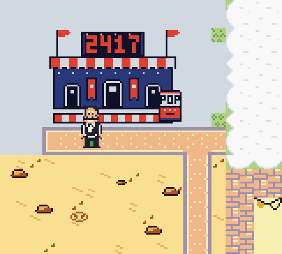
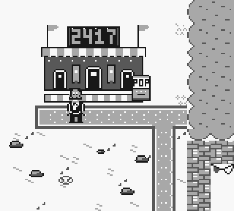
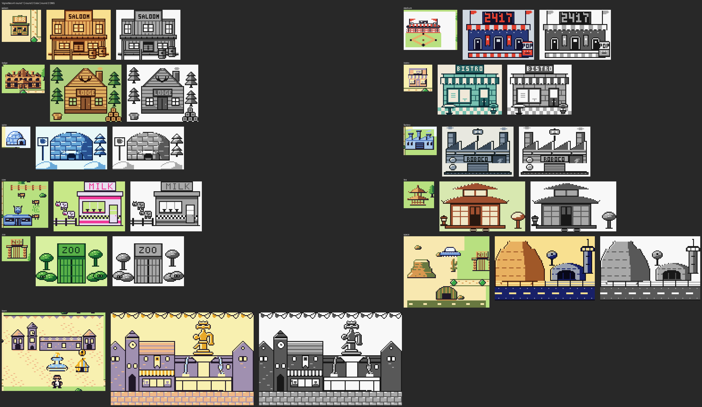
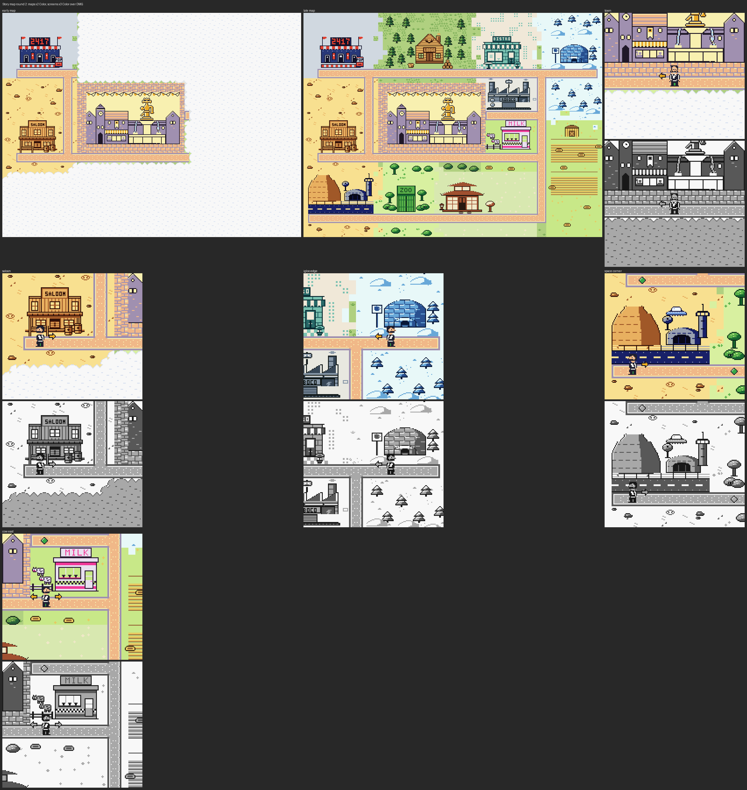
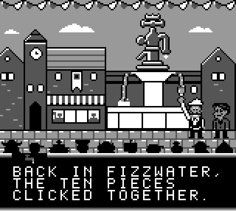
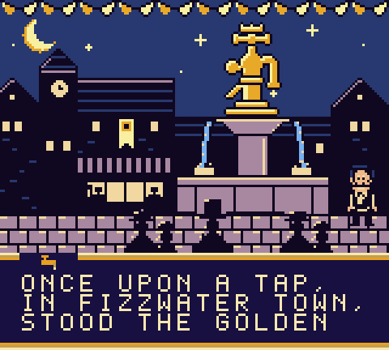
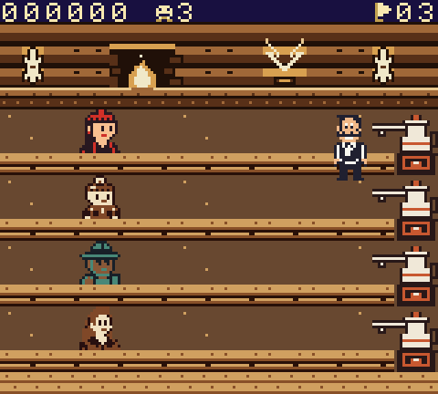
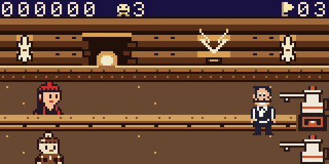
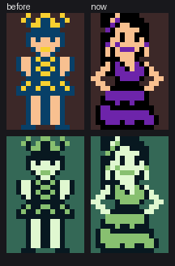
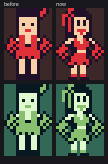

Open questions
Every question waiting on your answer, with its pictures. Answered questions come off this list. Reply in chat with the number, e.g. "Q12: shared".
2 open · updated 2026-11-04
Q78
Scrolling map, round 2
Go ahead with this map and its new place pictures, at the cost below?
- Full-size Sal, always facing the camera (your call)
- Cost: a big engine job (about 25 KB, tiles loaded while scrolling)
- Color full detail; DMG a little less detail and a slower camera in busy spots
- I'd fix: Chrome Cow as a biker bar, not a milk shop; saloon sign; colour clashes at area edges
Walk, Color

Walk, DMG

Places: round 1 | Color | DMG

Whole map and screens

Q77
Ending: picture change
Keep the white flash when the ending switches to the contest picture, or make it a quick fade?
- Not a photo: it is how the picture changes
- The explosion flash stays (your call)
- DMG and Color
View
New town, in the game
Ending, Color

Ending, DMG

Credits, Color

Opening, Color

View
Lodge log roll, in the game

View
Stage lights, now fading
Lodge

Igloo

View
Before and now
Saloon dancer

Cheerleader
